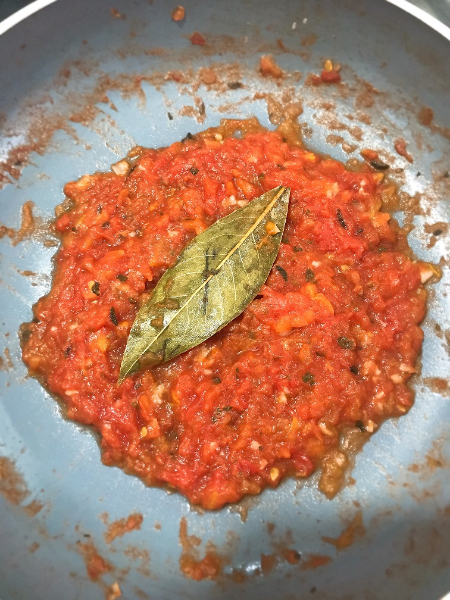

Fit Tomato Sauce

A good tomato sauce its the perfect base for many dishes - pizza, pasta, chicken, meat and fish.
Here is a basic, healthy, yet delicious version of a homemade tomato sauce, don't waste more time and let's cook!
Ingredientes:
- 2 tomatos
- 1 clove garlic, finale chopped
- 1 bay leaf
- 1 teaspoon ground oregano
- 1/2 teaspoon pink salt
- 1/2 cup water (room temperature)
Directions:
- Remove the skin and seeds from the tomatoes and cut them into squares.
- In a non-stick frying pan, add 5-6 tablespoons of water and let it heat up a little (a couple of minutes maximun).
- Once water is hot, add garlic and cook for two minutes over medium low heat. If water evaporates, add three more tablespoons.
- Then, add chopped tomatoes and a pich of salt. Stir constantly for two more minutes and then cover to cook over low heat.
- Add bay leaf, stir, cover and let it cook for another minute.
- add the oregano with a little more water (a couple of tablespoons), stir, cover and cook for another minute.
- At this point the tomatoes are already soft and it is the precise moment to crush them with a fork (or a potato masher). If you do it
with a fork, do it very carefully so they don't burn.
- Rectify the salt if necessary and Voilá! Your fit Tomato Sauce is ready to serve!
I use this recipe often, which is perfect as a base for my healthy pizza, you will find the recipe of this healthy pizza dough here.
Save and share this easy, tasty and healthy recipe and tag me when you make it.